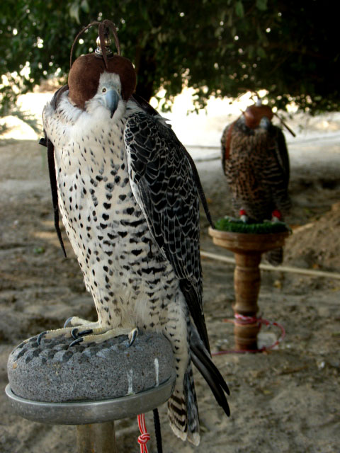

Resources → Reference
How Much Does Falconry Cost? Complete Breakdown
Falconry is not a cheap hobby, but it does not have to break the bank either. This guide provides a realistic, category-by-category breakdown of what you can expect to spend in your first year and beyond. Whether you are budgeting for an apprenticeship or just curious about what falconry actually costs, this is the most detailed cost guide available.
Permits & Licensing
Before you touch a bird, you need permits. The costs here are relatively modest but vary by state:
- Falconry exam fee: $10–$30 in most states. Some states include this in the permit fee.
- State falconry permit: $15–$75 per year. A few states (California, New York, Washington) charge more.
- Federal falconry registration: $0. The USFWS does not charge a separate federal fee; your state permit covers federal authorization.
- Hunting license: $15–$50 per year. Most states require a basic hunting license in addition to the falconry permit. Resident licenses are cheaper than non-resident.
- NAFA membership (optional but recommended): $50–$75 per year. The North American Falconers Association provides insurance, publications, access to field meets, and a network of experienced falconers.
Total permits & licensing: $25–$200 per year
Equipment
Equipment is the largest single variable in your first-year budget. A complete kit for an apprentice flying a Red-tailed Hawk includes:
| Item | Budget | Mid-Range | Premium |
|---|---|---|---|
| Falconry glove | $40 | $75 | $150 |
| Anklets, jesses, swivel | $30 | $50 | $80 |
| Leash | $10 | $20 | $25 |
| Bells & bewits | $15 | $30 | $50 |
| Bow perch (indoor) | $40 | $80 | $120 |
| Bow perch (outdoor) | $40 | $80 | $120 |
| Bath pan | $10 | $20 | $30 |
| Digital gram scale | $30 | $60 | $100 |
| Lure & lure line | $15 | $35 | $60 |
| Creance line | $10 | $15 | $20 |
| Giant hood / transport box | $50 | $100 | $200 |
| Hawking vest or bag | $50 | $100 | $200 |
| VHF telemetry (transmitter + receiver) | $350 | $450 | $600 |
| First-aid supplies | $25 | $40 | $60 |
| Books & study materials | $20 | $50 | $80 |
| Trapping equipment | $20 | $40 | $75 |
| Equipment subtotal | $755 | $1,245 | $1,970 |
Mews Construction
Your mews (raptor enclosure) is usually the most expensive single investment. Costs depend heavily on whether you build it yourself, hire a contractor, or convert an existing structure:
- DIY from scratch: $500–$1,500 for materials. This assumes you have basic carpentry skills, access to tools, and can source lumber and hardware cloth at standard prices. An 8′ × 8′ shed-style mews with a concrete pad is at the low end; a larger, insulated structure with a weathering yard is at the high end.
- Converted shed or outbuilding: $200–$800 if you already have a suitable structure. Costs cover adding hardware cloth over windows, installing a perch, predator-proofing, and meeting ventilation requirements.
- Pre-built shed + modifications: $1,000–$3,000. Buying a pre-made storage shed from a home improvement store and modifying it for falconry is a common middle-ground approach.
- Custom-built by contractor: $2,000–$5,000+. If you hire someone to build the mews, labor costs add significantly to the materials budget.
Typical mews cost for a budget-conscious apprentice: $500–$1,500
Acquiring a Bird
How you acquire your first bird has a huge impact on cost:
- Wild-trapped passage hawk: $0 (free). Most apprentices trap a passage (juvenile) Red-tailed Hawk during the fall trapping season. The only cost is the trapping equipment ($20–$75), which is already included in the equipment section above. This is the traditional and most common path for apprentice falconers.
- Captive-bred bird (General/Master level): $500–$15,000 depending on species. Harris’s Hawks typically run $800–$2,500. Captive-bred Peregrines range from $1,500–$5,000. Gyrfalcons and hybrids can exceed $10,000. Apprentices in most states cannot purchase captive-bred birds.
Cost for most apprentices: $0 (wild-trapped passage Red-tailed Hawk)
Veterinary Care
Finding an avian veterinarian experienced with raptors is essential. Vet costs include:
- Initial exam after trapping: $75–$200. A fecal float for parasites, physical exam, and blood panel are recommended for every newly trapped hawk.
- Parasite treatment (if needed): $20–$50 for medication.
- Annual wellness exam: $75–$150.
- Emergency vet visit: $200–$500+. Injuries, aspergillosis, or other emergencies can happen. Budget for at least one unexpected vet visit per year.
Annual vet costs: $200–$500
Food & Nutrition
Raptors eat whole prey items: quail, mice, day-old chicks, and occasionally rabbit or other game. Monthly food costs depend on your bird’s size and how much wild-caught game it takes during the hunting season:
- Frozen quail: $1.50–$3.00 each. A Red-tailed Hawk eats roughly one quail per day when not hunting, or 30 per month.
- Frozen mice: $0.50–$1.50 each. Used for smaller hawks and kestrels, or as supplements.
- Day-old chicks: $0.30–$0.75 each. The most economical option. Nutritionally adequate for most species when supplemented with other food sources.
- Wild-caught game: Free. During hunting season, quarry your hawk catches (squirrels, rabbits, starlings) can supplement the diet significantly.
Monthly food cost: $20–$60 ($240–$720 per year)
Ongoing Annual Costs
After the first-year investment, ongoing annual costs are more modest:
| Category | Annual Cost |
|---|---|
| Permits & hunting license renewal | $40–$125 |
| Food | $240–$720 |
| Veterinary care | $200–$500 |
| Equipment replacement & maintenance | $50–$200 |
| Telemetry batteries or recharging | $20–$100 |
| Gas for hunting trips | $200–$600 |
| NAFA membership (optional) | $50–$75 |
| Total ongoing annual cost | $800–$2,320 |
Year-One Cost Summary
| Category | Budget Path | Mid-Range | Premium |
|---|---|---|---|
| Permits & licensing | $50 | $100 | $200 |
| Equipment | $755 | $1,245 | $1,970 |
| Mews construction | $500 | $1,200 | $3,000 |
| Bird acquisition | $0 | $0 | $0 |
| Vet care (first year) | $200 | $350 | $500 |
| Food (first year) | $240 | $420 | $720 |
| Year-one total | $1,745 | $3,315 | $6,390 |
Most apprentice falconers who build their own mews and make some of their own equipment spend between $1,800 and $3,500 in the first year. This is comparable to other outdoor sports like hunting, fly fishing, or horseback riding when you factor in the initial gear investment.
Ways to Save Money
- Make your own equipment. Jesses, anklets, leashes, and bewits can all be made from leather scraps for a fraction of the retail cost. Your sponsor can teach you.
- Convert an existing structure. A garden shed, unused chicken coop, or section of a garage can often be converted into a mews for $200–$500.
- Buy used. Telemetry receivers, hawking vests, and perches are frequently sold second-hand through falconry forums and club swap meets.
- Join NAFA or your state club. Members often share equipment, food sources, and building materials. Some clubs maintain lending libraries of telemetry equipment for apprentices.
- Trap your own bird. Wild-trapped passage Red-tailed Hawks are free and are the standard apprentice bird in most states.
- Buy food in bulk. Frozen quail and chicks are significantly cheaper when bought in large quantities from reptile or raptor food suppliers.
Budget-Friendly Starter Gear
Quality double-layer leather glove at an apprentice-friendly price. 16-inch length protects wrist and forearm from Red-tailed Hawk talons.
Accurate to 1 gram with a wide platform for perch-style weighing. Essential for daily weight management of your hawk.
Multi-pocket vest with dedicated compartments for food, lure, spare jesses, and a rear game pouch. Keeps everything organized in the field.
Leather punch, grommets, grommet setter, and kangaroo hide for making your own anklets, jesses, and bewits. Pays for itself after one set of furniture.
Compact 3.5–5 cubic foot chest freezer for storing quail, mice, and chicks. Keeps raptor food separate from household food.
Browse Equipment & Supplies
Find affordable falconry gear from verified suppliers in our directory.
Browse ProductsList Your Falconry Business
Reach apprentices and experienced falconers searching for equipment and services.
Add Your Business